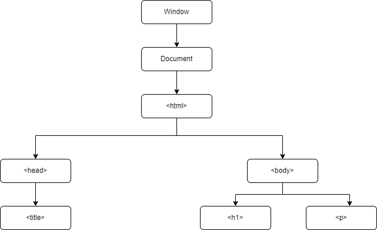

The DOM, or document object model is a representation of the 'pieces' that make up a document on the web. In our case, we will be mainly dealing with HTML documents. Each piece or element of our HTML is represented in the DOM. The DOM represents these in a tree like structure. Check out diagram below.
Notice how the html element is a branch below the document element, this will come in handy when it comes to accessing the DOM.
The DOM is essential when we want to use Javascript to manipulate our HTML. Where HTML forms the bare structure of our the house that is our webpage, and CSS makes it pretty. (Think of CSS as the paint, furnishings and decorations in our house) Javascript allows us to make the house interactive and exciting. Think of it like adding sensor lights or automatic doors.
Let's say we wanted to add am interactive button to our page.